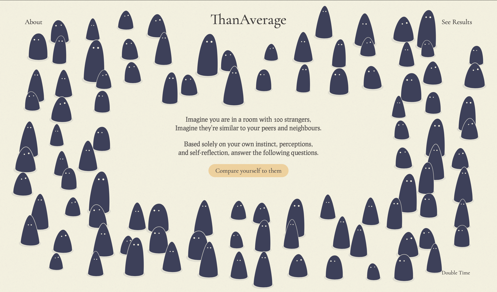
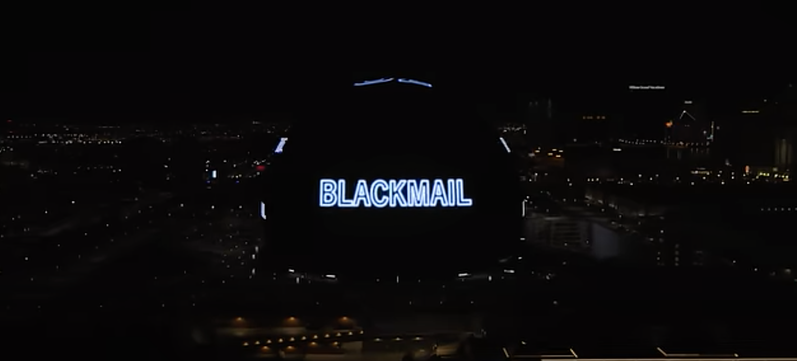

COMPARATIVE ANALYSIS
1
Than Average Website
A large part of this project's success comes from its simplicity. There are few elements on the page including one centrally located button that initiates the main experience. Once this begins, the interactivity is intuitive and effectively supported by visuals. I included this project here because it takes continually updates based on user input, which is a concept I am considering implementing in my capstone.

2
V-U2 Vegas Ad Campaign
This project, though without interface, embraces another approach I am considering taking into this project: creating emption with pacing and prhasing. This treatment is visible in the first few seconds of the video (accessed via the link above) where words flash across the Vegas Sphere. In a world where information, especially in advertising, is often presented in a legible, digestible way, this technique is incredibly memorable and effective. Applying this to an exploration of utopia and dystopia would make for an interesting project.
